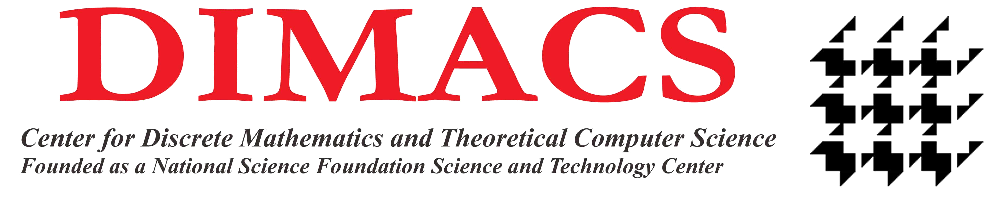
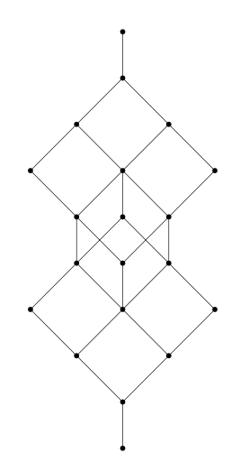

 Research Experience for Undergraduates (REU) is a special program by DIMACS, Rutgers University, which helps students to start their own research. It covers projects from math and theoretical computer science to machine learning and bioinformatics.
Students from Charles University have participated this project since 1999. Group leader of this year is . Other participants from Czech Republic are: , , , , , , , and .
This project is under supervision of and . I collaborate with , and . The main goal of the project is to find a winning strategy in a game called Division game.
There are 2N gold coins sitting on a table, of different weights. Alice and Bob know all the weights, and they are going to split these coins up between themselves so they each get N coins. The way they will do so is as follows. Alice first picks a coin on the table, say x, Bob chooses who gets to keep x (him or Alice). Then Bob picks another coin y on the table, now Alice chooses who gets to keep y, and so on back and forth, until one player has N coins, at which point all the remaining coins go to the other player. Each player wants to maximise the sum of the weights of the coins that they get. It seems to be true, but we don’t yet know how to prove, that Bob is always better off than Alice in this game!
We started thinking about our problem. At first, we solved some trivial examples. We played various games manually and we were thinking about general behavior of the problem.
We defined rank and we tried to describe the problem using ordering. We made a lot of conjenctures, but most of them failed after we had finished a solver. After a day of the lost hope, we came up with a conjencture that wasn't instantly disprooved via solver. We also prooved a theorem about values of coins. Since that moment, we could thinking just about distinct games with positive integer values. We also tried to find upper bounds for games, but all estimations were both true but useless, either useful but false.
 We prooved our conjencture for a = 2. It was trivial, but we were too much focused on general proof and we didn't think about that problem trivially. We discovered two different branches research. Ondra Sladký tried prove a conjencture by two-step induction. This leads to proof of case where a = 3. I tried study a base structure of distinct games. This leads to a interesting problem in a lattice theory. However it seems that it isn't a way how to prove our conjecture.
We continued in proof of case a = 3. We had to deal with a lot of mistakes in algebraic manipulations. We formulated and proved lemma about estimating games by given subset of coins. We finally proved treshold lemma and pumping lemma.
Proof of case a = 3 is mostly finished. Unfortunately, it seems that we cannot generalize this technique. Bhargav sent us his notes to his proof of case a = 3. It looks like similar mess full of estimations. I started to think about lattice from week 3. I found some literature that can be helpful in our problem. General (n,n,C) game lattice (denoted like L(n, n)) is finite young lattice, so it has very nice properties. L(1,n) is just linear order. We can get better estimations using finding ideals in lattices.
Photos from my journey across the US.
This project has received funding from the European Union’s Horizon 2020 research and innovation programme under the Marie Skłodowska-Curie grant agreement No 823748.